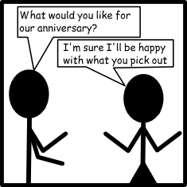
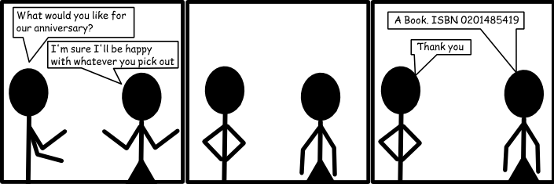
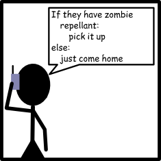

Chapter 1: Basics
Computers never do what you want them to, only what you tell them. -Anon
Ever notice that computers are impossible, picky things?
They're not. You're just not being very clear.
Let's look at an example situation from my life, which might have even happened to you.
Now, you and I both know what this secretly means. But a computer? That computer will have no idea what to do. The computer will probably buy something completely practical and maybe even totally random, like a new washing machine or a llama. If you or I purchased anniversary gifts like the computer did, we'd probably never celebrate another anniversary.
A computer actually needs something like this:
Perfect! Just head to the bookstore, give them the ISBN and you're good to go. That ISBN tells you exactly which book to buy. Nothing is ambiguous.
Programming languages are designed to help you describe a solution to a problem without any ambiguities. A program is nothing more than a list of instructions that a computer is going to follow in order. Programming is really a two step process. First you need to come up with an approach to a problem, called an algorithm, and second you need to translate your algorithm into the programming language so that the computer can do the work. All the while you need to remember that the computer will do exactly what you tell it, which seems really simple right now, but you'll forget later.
There are a bunch of different programming languages you can use. Some are awful. Some are fantastic. Here's two examples.
Java:
Erlang:
- -mod(hello).
- -export([start/0]).
- start() ->
Both Java and Erlang are programming languages. Java gets used all over the world in all sorts of different places. If you keep programming, you'll probably eventually pick up the basics of Java. Erlang is used in a few specialized spots, where a computer needs to think about multiple things at the same time. But both of those languages seem needlessly complex to me. I thought maybe we'd start with something simpler.
Python:
- print "This is Python!"
Where to Program
Before we can actually write our first program, we need to find a place to get our programming done. You've got an overwhelming set of options, so let's take a moment and pick one.
One option is to type Python in a word development program, such as Microsoft Word. This is a really bad idea, and we should forget that I even brought it up. Word processing programs are designed to process text and put in all sorts of nasty characters like “ ”. We don't want those. We want straight quotes, like ". Plus, most Word Processing programs insert extra things that you can't see, which are great for doing word processing, but terrible for the type of simple text editing you want for programming.
Another option is to use a text editor such as Notepad on Windows, or gedit on Linux. Text editors are great, because they edit simple text. Simple is good. But the problem is that in order to run the program, you have to save it and find a command prompt and navigate to the right folder, and then... I've already lost you, haven't I?
Text editors are great after you've been programming for a while. But right now we just want something simple. Something easy. Python comes with something called an Integrated Development Environment (Programmers are lazy, so we just call it an IDE). The IDE that comes with Python is called IDLE. You'd think that because I wrote IDLE in all capital letters that its an acronym. But you're wrong. After searching the internet for hours, the best answer I could come up with is that IDLE is named after Eric Idle, a Monty Python member. Anyway, the best part about IDLE is that it's probably already installed. Plus, when you want to run a program all you need to do is press F5. Tada! Your program runs. Look for it in your Start Menu.
While IDLE is a great tool for learning to program, it's not a very good tool for doing large projects. There are literally a hundred different options for you. Two things to keep your eye open for: Integrated debuggers and auto-complete tools. Integrated debuggers help you track down problems buried deep in your code. Auto-complete tools attempt to figure out what you're typing and make suggestions. Le<enter> Typ<enter> nee<enter> to hap<enter>. Check out the Python Wiki.
Finally, no discussion of programming environments would be complete without talking about Vim and Emacs. Both of these are more than IDEs, they're ways of life. They have more built-in tools than I have pages to talk about them. Both programs have very, very steep learning curves, but offer dramatic improvements to how quickly you can program.
Your First Program
Let's make a really, really simple program. Probably the same first program any programmer you've ever met wrote.
- print 'Hello, World!'
Simple, right? That's a complete Python program. Simply open a new file in IDLE, type it in, save it, and press F5. It'll run and print a little message to you from your computer. And it's exact: the print statement is given the sentence "Hello, World!" and it puts it on the screen for you.
It's important that you save the file correctly. Python files should be saved with the .py extension, unless they're graphical, in which case you can save them with the .pyw extension. This way the operating system knows what they are.
Let's look at another one.
- for i in range(0,10):
- print i*2,
Easy! That'll print out:
0 2 4 6 8 10 12 14 16 18
Actually, think about that one. You could almost read that like English. For i in the range 0 to 10, print i*2. That just says to take each of the values from 0 to 10, multiply each one by two, and print out each result. Python does a pretty good job of being the type of language you can almost read like English. Give it some time, and you'll find yourself talking like you speak Python.
Escape Characters
There's some other trickiness with the print statement. Let's say I want to print a story with some dialog:
- print "And then she said, "Why yes, I would like a banana!""
See the problem? Python will actually see two strings there. There's the string "And then she said, " and there's the string "", what she actually said isn't quoted, so python doesn't know that we actually wanted to print that too. Instead, you can use single quotes:
- print 'And then she said, "Why yes, I would like a banana!"'
Of course, what happens if our character used a contraction, like this:
- print 'And then she said, "Don't you want a banana?"'
Now python sees only one string: 'And then she said, "Don'. The rest of that line will simply throw an error. To solve this problem, you need to escape the single quote in the word don't. Use a backslash.
- print 'And then she said, "Don\'t you want a banana?"'
Python will spot the backslash before the single quote and understand that it should print the quote instead of ending the string. "But wait," you say, "How do I make it print a slash?" Simple! Just add another backslash, like "\\". Escape characters also give you access to a few other things:
| Character | Effect |
|---|---|
| \\ | backslash |
| \t | horizontal tab |
| \n | new line |
| \b | bell |
| \' | single quote |
| \" | doublequote |
You can find a better list on the Python Website, but the ones above should get you pretty far.
Comments
This one time, whilst working on a program, a velociraptor jumped through my window. Startled, I immediately ran and shut myself in a kitchen, and hoped that raptors couldn't open doors. When the raptor left, I was stuck trying to remember where I'd been in my program.
If only I'd used a comment. Comments are ways to leave notes to yourself (and others). Any line that starts with a # becomes a comment. You can even put comments at the end of a line, after some Python code.
- print "This is a very important program " #I was working here
- #TODO: install a stronger window
Comments are also useful when you're trying to fix a problem with your program. By putting a # at the beginning of a line you tell Python not to run it. This way you can take out a line and see if that's why your program wasn't working.
This website will be taken offline before the end of 2011